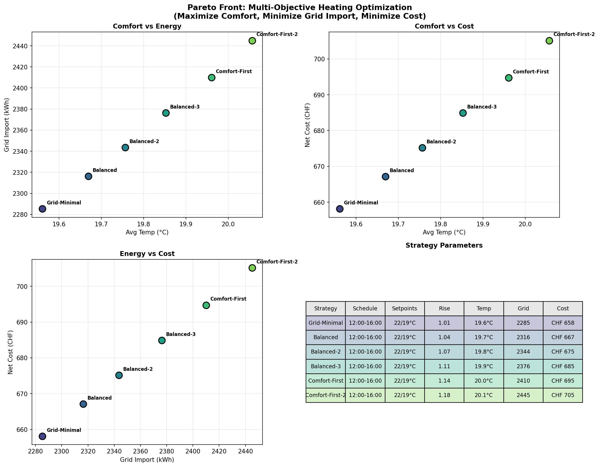

Phase 1: Data Preprocessing
Data preprocessing pipeline for energy balance and sensor data.
- Energy balance data: 15-min intervals from 2023-03 to present
- Sensor data: 96 heating sensors, 27 weather sensors, room temperatures
- Tariff data: Primeo Energie rates with high/low tariff windows
- Output: Cleaned parquet files with integrated dataset
Key Outputs
integrated_dataset.parquet: Merged energy + sensor datatariff_schedule.csv: Electricity tariff rates
Phase 2: Exploratory Data Analysis
Comprehensive analysis of energy patterns, heating system, and solar correlation.
- Energy: 55.9 kWh/day PV generation, 44% self-sufficiency
- Heat pump: COP 3.55 average, heating curve model R²=0.96
- Solar-heating overlap: Only 4.7% forced grid consumption
- Battery degradation: 5-11pp efficiency drop after deep discharge event
Key Outputs
fig2.01-fig2.11: Energy and heating analysisfig2.12: Heating curve schedule detectionfig2.13: Weighted temperature responsefig2.14-fig2.16: Tariff analysisfig2.17: HK2 target vs actual temperature

Daily Energy Time Series

Heat Pump COP Analysis

Heating Curve Schedule

HK2 Target vs Actual
Phase 3: System Modeling
Physics-based models for thermal dynamics, heat pump, and energy system.
- Thermal model: R²=0.68, building time constant ~24h
- Transfer function with causal coefficients (g_eff=0.208)
- COP model: COP = 5.93 + 0.13×T_outdoor - 0.08×T_HK2 (R²=0.94)
- Self-sufficiency potential: 57% → 84% with optimization
Key Outputs
fig3.01: Transfer function thermal modelfig3.02: Heat pump COP modelfig3.03: Energy system analysisfig3.04: Tariff cost modelcausal_coefficients.json: Physics-based coefficients for Phase 4

Thermal Model

Heat Pump Model

Causal Coefficients
Phase 4: Optimization
Multi-objective optimization using NSGA-II for heating strategies.
- Three objectives: Maximize comfort, minimize grid, minimize cost
- Uses causal coefficients from Phase 3 (g_eff=0.208)
- Optimal strategies: 22°C setpoint, 12:00-16:00 schedule, curve_rise 1.0-1.2
- Grid-minimal: 7% reduction with 0% comfort violations
Key Outputs
fig4.01-fig4.03: Strategy comparison and simulationfig4.04-fig4.06: Pareto optimization resultsfig4.07-fig4.10: Detailed strategy analysisselected_strategies.json: Pareto-optimal parameters

{kind=link}
Pareto Front

Temperature Predictions
Phase 5 Pilot: Parameter Exploration
T_HK2-targeted pilot experiment (Jan-Mar 2026) to learn thermal response.
- 10 blocks × 7 days with varied heating parameters
- T_HK2 spread: 9.5°C (comfort), 10.7°C (eco)
- RSM analysis using block-averaged metrics (48h washout)
- Goal: Learn T_indoor = f(T_HK2 history, T_outdoor, thermal_mass)
Key Outputs
pilot_schedule.json: Block schedule with parametersthk2_design.csv: T_HK2-targeted design matrix
Phase 5: Intervention Study (Future)
Planned randomized crossover study for winter 2027-2028.
- 20 weeks with 3 strategies (Baseline, Grid-Minimal, Balanced)
- 7-day blocks with 3-day washout + 4-day measurement
- Statistical power: 97% to detect +0.30 COP change
Key Outputs
experimental_protocol.html: Full study protocol